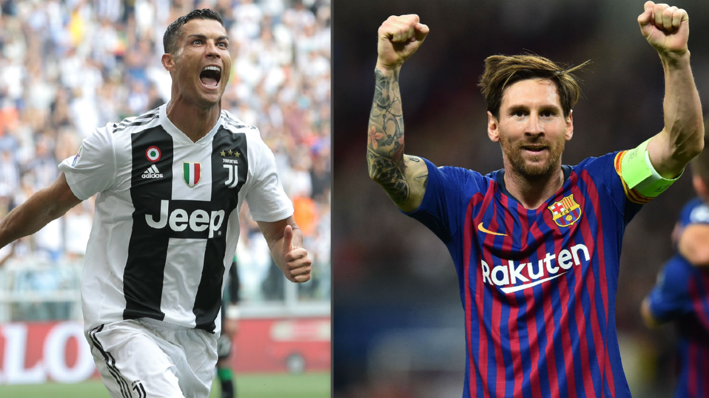

Nikmatilah selagi bisa ! Ronaldo vs Messi
Lionel Messi dan Cristiano Ronaldo adalah dua pesepak bola terbaik di dunia dalam belasan tahun terakhir, fakta itu tidak terbantahkan. Keduanya terus membuktikan diri sebagai pemain top dengan membantu timnya melakukan sesuatu yang nyaris mustahil diperbuat pemain-pemain lain. Messi dan Ronaldo terikat dalam rivalitas positif yang menarik untuk diamati. Sadar atau tidak, dua pemain ini selalu mendorong satu sama lain, mereka saling menyalip sampai mencapai level yang sebelumnya tidak terbayangkan. Messi dan Ronaldo baik bagi satu sama lain. Perdebatan soal siapa pemain yang lebih baik dari dua pemain itu juga tidak pernah membosankan. Saat Messi melakukan sesuatu yang luar biasa, Ronaldo menyusulnya dengan membuat keajaiban. Sebaliknya pun demikian, ketika Ronaldo tampil impresif dan memecahkan rekor, Messi mengikuti jejaknya dan menciptakan rekor lain.
Di sisi lain, waktu terus berjalan, kita tidak akan bisa menyaksikan duel Messi-Ronaldo selamanya. Messi bukan alien, Ronaldo bukan robot, mereka berdua mulai menua. Messi dan Ronaldo telah menjadi pusat dunia sepak bola dalam 15 tahun terakhir, dan, meski kehebatan mereka tampak seperti manusia super, atau alien, atau pemain yang bermain di dimensi berbeda - faktanya mereka tidak bisa bermain selamanya. Membayangkan sepak bola tanpa Messi dan Ronaldo ternyata sedikit menakutkan dan entah bagaimana terasa tidak menyenangkan. Bagaimanakah wajah dunia sepak bola tanpa mereka? Bagaimana kita mengatasinya? Ronaldo sudah berusia 34 tahun, Messi menginjak usia 32 tahun pada Juni nanti. Messi telah menjadi bagian tim utama Barca sejak 2005 silam, Ronaldo pernah jadi pemain muda termahal di dunia. Mungkin banyak fans muda sepak bola yang tidak lagi ingat era sebelum dua pemain ini. Satu hal yang pasti, ketika segala pujian terucap dan segala tindakan terwujud, persaingan Messi-Ronaldo inilah yang membuat era ini begitu spesial - keduanya mendorong satu sama lain. Rasanya aneh membayangkan era Messi tanpa Ronaldo, atau era Ronaldo tanpa Messi. Sebab itu, nikmatilah selagi bisa, mereka tidak akan bermain selamanya.